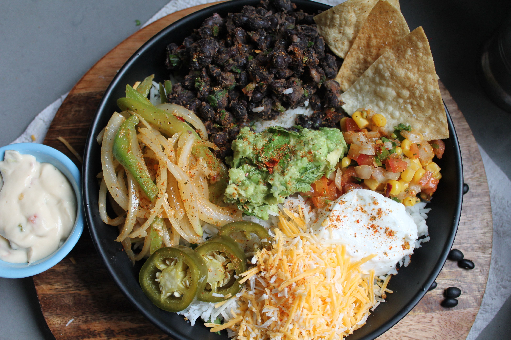
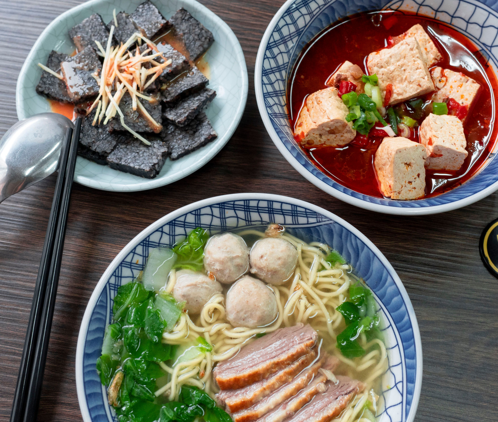
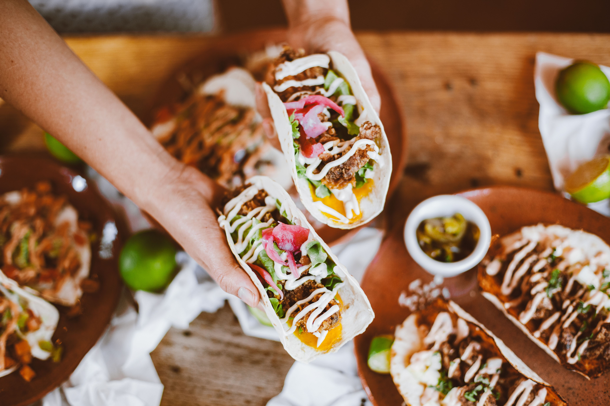

Cultural identity
Food symbolizes culture and tradition; local brands can signal values that global brands must earn through adaptation.
MRKT 454 7380 Global Marketing · UMGC · 05/06/2025
An executive-ready interactive dashboard translating cultural adaptation, culinary experience, and China market dynamics into a clear launch strategy.



Core thesis: Chipotle can win by adapting flavors, formats, pricing, and digital ordering while preserving freshness and ingredient transparency.
Problem statement
Food symbolizes culture and tradition; local brands can signal values that global brands must earn through adaptation.
Chinese companies often use traditional cultural elements to respond to consumers who resist excessive Western influence.
Individual bowls and unfamiliar flavors can feel misaligned with common preferences for affordable communal meals.
Culinary bridge
These visuals anchor the menu recommendation: keep Chipotle’s customizable format, then layer in Chinese flavor cues, shared portions, and local dining rituals.



Market dashboard
The Belt and Road Initiative (BRI) is China’s 2013 global development strategy to strengthen regional connectivity, infrastructure, trade, and policy alignment across Asia, Africa, and Europe. For Chipotle, BRI-linked agricultural trade can support lower-friction ingredient sourcing, better supplier optionality, and a clearer case for a China launch.
BRI food-import value growth from $18.3B to $47.9B.
Online delivery and QR ordering support a tech-forward launch.
Foreign brand halo must be reinforced with visible sourcing standards.
Above local fast food, below premium Western brands, avoiding unlucky “4.”
China-led infrastructure, trade, and regulatory-connectivity strategy launched in 2013; it has helped expand food imports from partner nations from $18.3B in 2013 to $47.9B in 2021.
BRI trade corridors can help Chipotle compare imported versus local ingredients by product category, manage inspection and customs risk, and reduce dependence on any single supplier region.
Illustrative projection assumes 8 pilot stores at roughly $1.48M each in year 1, then 45–55 localized urban stores if BRI-enabled sourcing, delivery demand, and consumer acceptance perform well.
Cultural adaptation
The adaptation heatmap translates research themes into business actions.
Prototype offer
A localized, shareable format that keeps Chipotle’s customizable DNA while adding Chinese-inspired flavor familiarity.
S.W.O.T analysis
Strategic alternatives
Click a strategy card to update the scorecard and recommendation logic.
Recommendation
Recommended launch sequence: test, prove, scale.
Launch Sichuan pepper steak, mild regional sauces, fresh vegetable builds, and family meal bundles.
Use competitive price endings with lucky “8” and avoid culturally negative “4.”
Start in Shanghai and Beijing with QR ordering, delivery apps, and streamlined pickup.
Partner with influencers and make ingredient transparency visible in-store and online.
Executive decision
Chipotle should preserve freshness, customization, and nutritious simplicity while changing flavor architecture, dining format, and digital access to match Chinese consumer expectations.